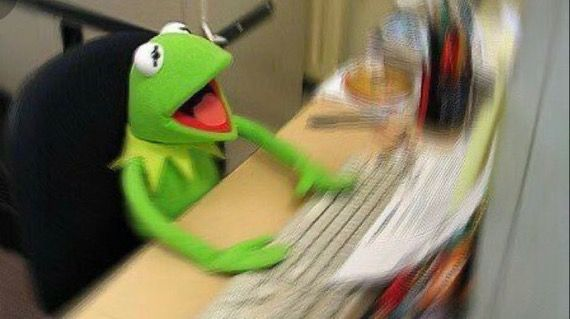

Wadida Uzma

Email: wadidauzma@gmail.com | Phone: 2014fb07166
Education
Mohammadpur Preparatory School and College
Current Student
- Developing a strong foundation in academics with a focus on personal growth and skill development.
- Actively participates in school activities and collaborates with peers on projects and assignments.
Skills and Abilities
Problem-Solving Skills
- Proficient in solving Rubik's cubes, demonstrating logical thinking, patience, and problem-solving ability.
Creative Skills
- Beginner-level guitar player, showcasing creativity, musical interest, and a willingness to learn new skills.
Digital Literacy
- Experienced in online gaming platforms like Roblox, reflecting adaptability to technology, strategic thinking, and collaborative skills in multiplayer environments.
Teamwork and Collaboration
- Enjoys working with others in both academic and recreational settings, fostering a spirit of cooperation and shared success.
Interests and Hobbies
- Puzzles and Challenges: Enjoy solving brain teasers, including Rubik's cubes, as a way to strengthen critical thinking.
- Music: Passionate about exploring music and improving guitar-playing skills.
- Gaming: Enthusiast of online games, particularly Roblox, which helps build strategic and social skills.
A portfolio I made
MY WEBSITE